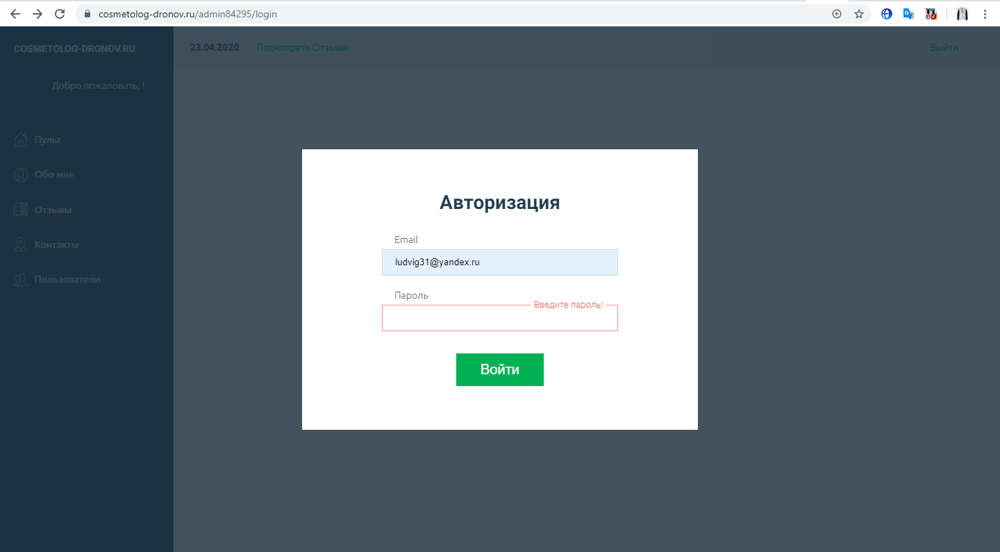
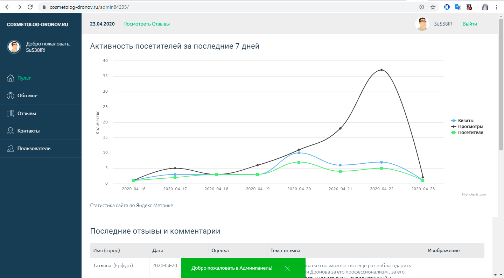
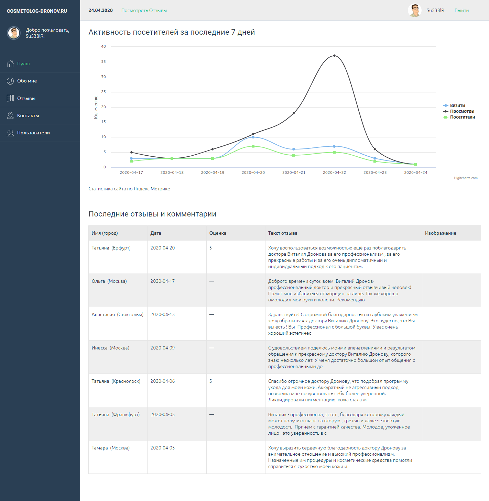
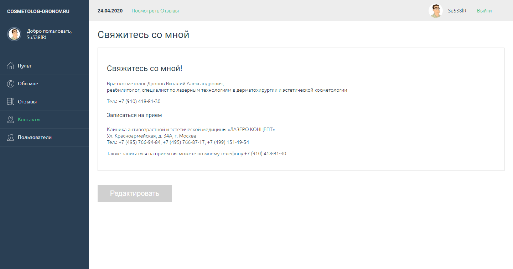
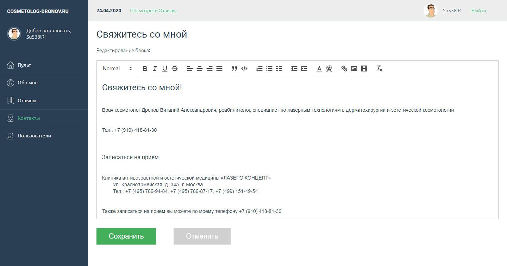

Админ-панель на Vue.js для PHP сайта
Админ-панель (SPA) создана для персонального сайта врача COSMETOLOG-DRONOV.ru.
В Админке имеются следующие страницы: Пульт (Главная), Обо мне, Отзывы, Контакты и Пользователи.
Для осуществления операций создания, чтения, обновления и удаления информации (CRUD) используется REST API, разработанное на PHP.
С целью создания SVG спрайта был заменен базовый загрузчик Vue CLI на svg-sprite-loader путем настройки файла vue.config.js.
Посмотреть страницу авторизации приложения.
Функционал, реализованный в приложении:
- Авторизация и выход из Админ-панели.
- Валидация полей форм при помощи плагина Simple-Vue-Validator и отображение подсказок.
- Создание, чтение, обновление и удаление Пользователей и Комментариев.
- Чтение и редактирование контентных блоков Обо мне и Контакты.
- Для Пользователей — загрузка изображения (аватарки) на сервер и удаление прежнего при смене аватарки.
- Пагинация в разделе Отзывы.
- Выбор количества Комментариев для показа на одной странице.
- Сортировка в разделе Отзывы: все / только пациенты / администратор.
- Сообщения для администратора в виде модального окна.
- Для главной страницы Пульт разработано отображение статистики из Яндекс Метрики. Использованы API Яндекс Метрики и библиотека Highcharts для построения графиков.
Использованные инструменты и пакеты:
- Vue CLI — система для быстрой разработки на Vue.js.
- Шаблонизатор Pug.
- Препроцессор Sass.
- Для Svg спрайта использованы пакеты: svg-sprite-loader, svgo и svgo-loader.
- Axios — для получения и отображения данных из API.
- Vuex — для работы с данными (управление состоянием).
- Highcharts и highcharts-vue — для построения диаграмм на основе данных API Яндекс Метрики.
- Vue2-editor — текстовый редактор.
Скриншоты и видео

Пульт (главная страница)


Редактирование контентного блока «Обо мне»:
Добавление, редактирование и удаление комментариев в разделе «Отзывы»:
Контакты


Добавление, редактирование и удаление пользователей в разделе «Пользователи»: